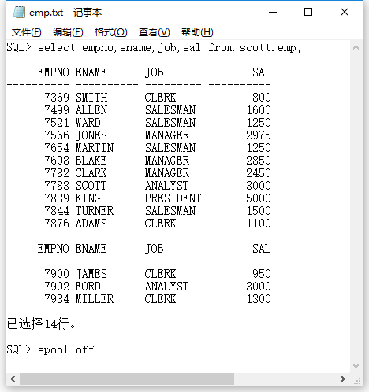

SQLPlus是一个被DBA和开发人员广泛使用的功能强大的Oracle工具，可以在各个平台上拥有操作的一致性。SQLPlus可以执行输入的SQL语句和SQL文件，通过SQLPlus可以和数据库进行对话。以下例子基于Oracle 11g。
set命令设置运行环境
在Oracle 11g中，可以使用set命令来设置SQLPlus的运行环境。set命令语法如下：
|
|
variable为变量名，value为变量值。下面介绍几个常用的set变量。
pagesize变量
pagesize变量用来设置从顶部标题到页结束行（包含页首的空行）之间的行数。pagesize的默认值为14：
使用set pagesize命令修改一页的行数为18：
可手动数一下是不是18行(lll￢ω￢)。
newpage变量
该变量用于设置一页中空行的数量，默认值为1，可以使用set newpage命令改变该值：
linesize变量
该变量用于设置SQLPlus环境中一行所显示的最多字符总数，默认值为80，当pagesize过小时，数据就会出现折行显示的情况。可以使用set linesize命令来调整linesize的值：
pause变量
用于设置输出结果翻页时，是否暂停，基本语法如下：
value可取的值有：
off，默认值，返回结果一次性输出完毕，中间翻页不会暂停；on，表示输出结果的每一页都暂停，用户按ENTER继续；text，在设置为on之后，继续设置text的值，用于暂停时显示；
比如：
numformat变量
该变量值用于设置显示数值的默认格式，基本语法如下：
format为数值掩码，常用值及其说明如下：
| 掩码 | 说明 | 举例 |
|---|---|---|
| 9 | 查询结果中数字替换格式的掩码 | 999 |
| 0 | 格式中的掩码屏蔽掉查询结果中的数字 | 999.00 |
| $ | 在查询结果中的数字前添加美元前缀 | $999 |
| S | 为数字显示符号类型，通常用于显示查询结果中的正负数字 | S999 |
| , | 在字符,位置上放置都逗号/td>
| 999,99 |
查看scott.emp表中的SAL字段值，然后使用”$999,999,999.00”格式显示:
timing变量
该变量用于显示执行SQL语句所花的时间，默认值为off：
set命令还有很多变量可用，可使用help set命令来查看。
常用SQLPlus命令
help命令
help命令用来帮助用户查询指定命令详细介绍，类似于Linux的man，其的语法如下：
?表示一个命令的部分字符，用于模糊查询；topic参数表示要查询的命令的完整名称。如果直接输入help，则显示的是命令本身的详细信息：
也可以使用help index命令查看SQLPlus命令清单：
describe命令
该命令用于查询指定数据表的组成结构，语法如下：
describe可缩写为desc。
比如查询scott.emp表中SALESMAN的编号，姓名和工资，过程中，使用#desc scott.emp命令查询scott.emp表中工资字段的名称：
spool命令
该命令可以将查询结果输出到指定文件中，spool的语法格式如下：
cre[ate]，表示创建一个新的文件，默认值；rep[lace]，表示覆盖已存在的文件；app[end]，表示追加到一个已存在的文件中；off|out，表示关闭spool输出。
比如：
到D盘打开emp.txt如下：

define命令
该命令用来定义一个变量并赋值，基本语法如下：
比如：
show命令
show命令用来显示SQLPlus系统变量的值，语法如下：
option表示要显示的系统选项，常用的值有：all，parameters [parameter_name]，sga，spool和user等。
save命令
该命令将SQL缓冲区的最近一条SQL或PL/SQL块保存到指定的文件中，语法如下：
比如：
如果不指定文件扩展名，默认为.sql。
get命令
该命令将一个SQL脚本文件的内容放进SQL的缓冲区，语法格式如下：
其中list表示加载到缓冲区的时候显示文件的内容，nolist则表示不显示。
比如加载d:\dept.sql到SQL缓冲区，并运行命令/执行该语句：
start和@
两个命令都是用于执行一个sql脚本文件，比如：
格式化查询结果
column
该命令可以实现格式化查询结果，设置列宽，设置列标题等。语法如下：
column_name用于指定要设置的列的名称，alias用于指定列的别名，option用于指定列的显示格式，其值和说明如下表所示：
| option选项的值 | 说明 |
|---|---|
| clear | 清除指定列所设置的格式，恢复默认值 |
| format | 格式化指定列 |
| heading | 指定列标题 |
| justify | 调整列标题的对齐方式，默认情况下：数值类型的右对齐，其他类型的左对齐 |
| null | 替换null值 |
| print/noprint | 显示列标题或隐藏列标题，默认为print |
| on/off | 控制定义的显示属性状态，off表示定义的所有显示属性都不起作用 |
| wrapped | 当字符串的长度超过显示宽度时，将字符串的超出部分折叠到下一行显示 |
| word_wrapped | 表示从一个完整的字符处折叠 |
| truncated | 表示截取字符串尾部 |
format选项
使用format选项格式化scott.emp表中的sal列，格式为$999,999.00：
heading选项
使用heading选项将scott.emp表的empno，ename和sal三个列名转换为中文：
null选项
使用null选项将scott.emp表中comm列值为null显示成“空值”：
wrapped/word_wrapped选项
使用wrapped选项实现按照指定长度折行：
使用word_wrapped选项按照完整字符串折行
ttitle和btitle命令
这两个命令分别用来设置打印时每页的页首和页脚标题，其中ttitle语法如下（btitle语法类似）：
printspec作为头标题的修饰性选项，其值和说明如下表所示：
| printspec选项的值 | 说明 |
|---|---|
| col | 指定当前行的第几列打印头标题 |
| skip | 跳到从下一行开始的第几行，默认为1 |
| left | 在当前行中左对齐打印数据 |
| center | 在当前行中间打印数据 |
| right | 在当前行中右对齐打印数据 |
| bold | 以黑体打印数据 |
比如：打印输出scott.salgrade数据表中的记录，并设置标题：